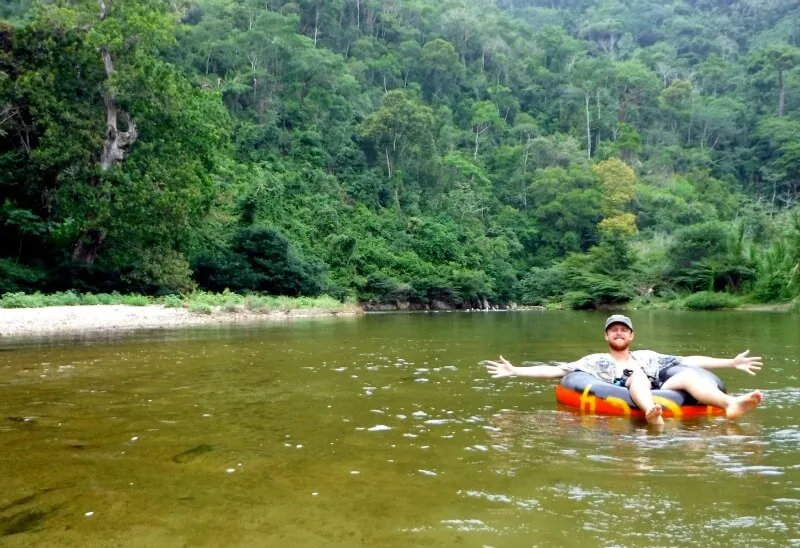

Palomino · Colombia
Tubing is de iconische activiteit van Palomino — je drijft op een grote rubberen band (inner tube) de Rio Palomino af, van de jungle naar de zee. De rivier snijdt door weelderig tropisch woud voor ze uitmondt in de Caribische zee — en die overgang van zoet naar zout water is een onvergetelijk moment.
De tochtig is zowel ontspannend als avontuurlijk — je hebt soms rustig drijfwater, dan weer stroomversnellingen. Meerdere operators in Palomino bieden tubes aan, inclusief een motorfiets-lift naar het startpunt bovenstrooms. Het is een perfecte activiteit voor elke dag in Palomino.

Spend a few relaxing hours drifting slowly along the refreshing Río Palomino in an inner tube. Any Palomino hostel can arrange a float trip, or you can shop around on Carrera 6, the town’s main drag. Prices will vary depending on the length of the float trip. Tour Adventure Palomino, for example, has three-, four- and five-hour trips. The longest includes a three-hour hike to Sewiaka, a Kogi village on the riverbank, where the group first meets with the local mamo, or spiritual leader, to learn some of the local customs and beliefs.
Other than lazing on the sands (the rip currents make swimming dangerous) and dining on lionfish ceviche, the main activity is tubing down the Río Palomino, which most hostels can arrange (this involves a short jeep ride, followed by a 20min hike). An alternative inland stopover is nearby Río Ancho, and there are several quieter beachside options opening up along the coast towards Riohacha, including the small villages of Dibulla and Boca de Camarones. Río Ancho Some 12km east along the main highway from Palomino, RÍO Ancho is a small town on the thickly forested river of the same name and the hub of a growing ecotourism scene that’s far less developed than its seaside neighbour (there are no beaches here). Riverside House can help organize rafting and kayaking down the river to the sea (you’ll likely see otters and howler monkeys), and hikes up into the hills, visiting traditional Kogi villages (around 4hr on foot). Arrival and departure Palomino and around By bus Cootrans Oriente minibuses run from Santa Marta (every 30min; 1hr 30min) from their small bus station behind the market at the corner of Cra 9 and C 11 to Palomino (via the Tayrona park entrance). Alternatively, any of the main buses travelling between Santa Marta bus station and Riohacha should be able to drop you in Palomino or Río Ancho (remind the driver). Moving on in either direction, just flag buses down on the main highway. Shared taxis charge per person and run between Palomino and Río Ancho (15min). Door to door MarSol Transportes (5 656 0302, ) operates a convenient “puerta-to-puerta” service to Palomino from Cartagena via Santa Marta (around 5hr; charge). Accommodation and eating palomino Aité Eco Resort Playa Donaires;. Luxurious boutique hotel with seven rooms and two cottages right on the beach, all with bathrooms, mosquito nets and electricity (free wi-fi in the main house). Three meals included in the rate. Doubles, cottages Dreamer Hostel Playa Donaires;. No-frills but modern and large en-suite rooms with terraces as well as four small, basic dorms and a decent pool just off the beach – it tends to be a party place thanks to its popular bar (which closes at midnight) and dependable satellite wi-fi. The excellent buffet breakfast is also available to non-guests. Dorms $, doubles SUÁ Palomino Av Troncal Caribe Km 70 (just off the main highway in town); 310 251 5738.
• Laat je waardevolle spullen in je accommodatie — je gaat nat
• Zwemvest wordt altijd verstrekt — gebruik het ook bij kalm water
• De monding van de rivier in de zee is het hoogtepunt van de tocht
• Breng cash mee — operators werken bijna altijd cash-only
• Boek rechtstreeks met een operator in het dorp — geen online boeking nodig